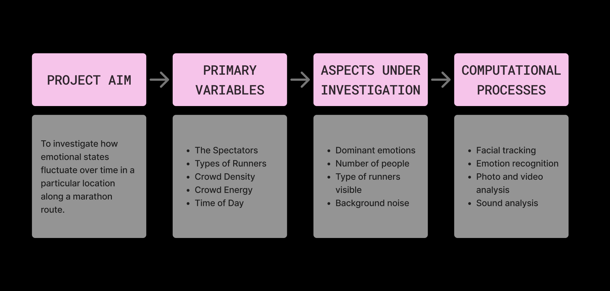
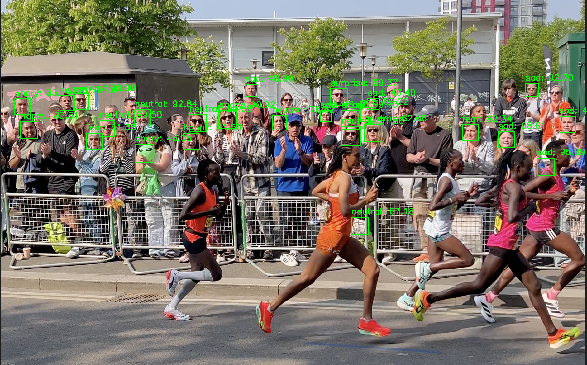
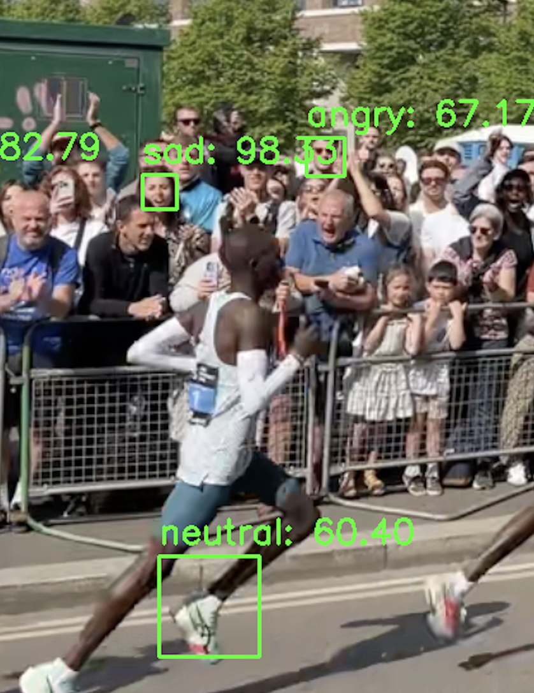
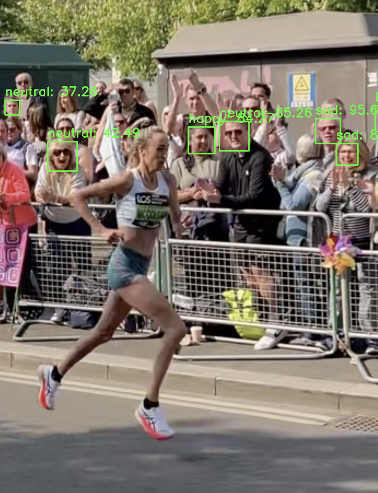
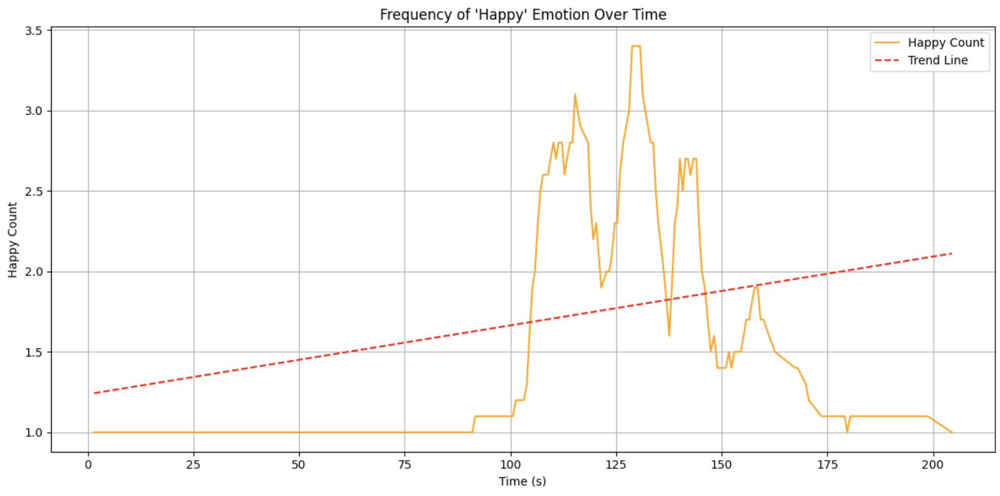
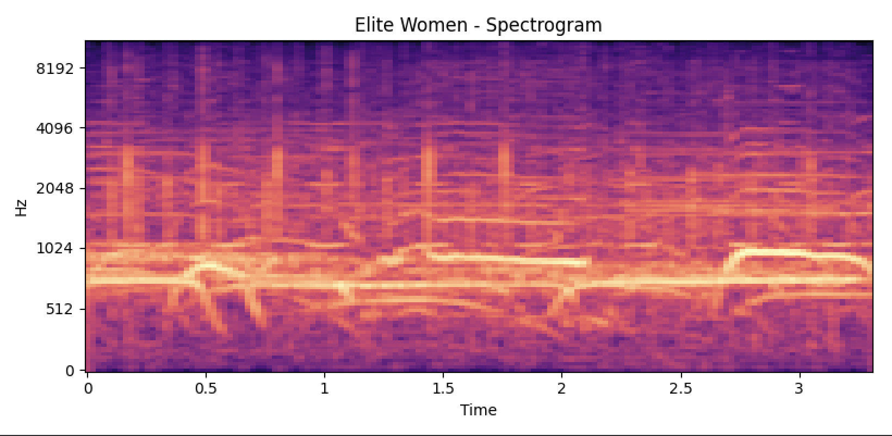
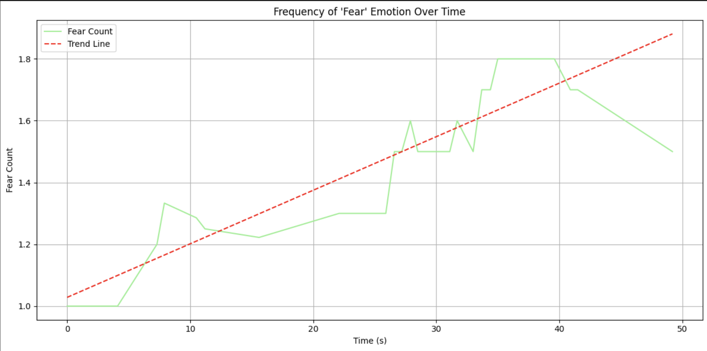

FEELING THE CROWD
Computational Analysis | Machine Learning | Data Visualisation
A computational investigation into the emotional atmosphere of the TCS London Marathon. Treating the marathon as a complex human system, this project explores how computational tools can be used to analyse crowd behaviour, collective emotion, and spectator support during a large-scale public event.
Investigation Questions
(1) How does emotional atmosphere change with time during a marathon event?
(2) What patterns of social interaction emerge as different runners pass through the course?
(3) How could understanding these interactions and dynamics improve marathon planning, spectator experience, or event accessibility?
(4) How do computational tools allow us to ‘see’ public emotions that are otherwise invisible?
(5) Is using computational tools effective when analysing large scale, mass events such as a marathon?

Project Aims
To investigate how emotional atmosphere changes over time as different runners pass, and whether these patterns can be measured using computer vision and audio analysis. To then evaluate how computational methods can reveal otherwise invisible crowd dynamics and inform strategies to improve runner experience.



Python Deepface Analysis
Real-world conditions, including crowd density and varying image quality, resulted in inconsistent facial detection and occasional emotion misclassification.
This demonstrated the limitations of relying solely on AI-based emotion recognition in uncontrolled environments.
Software & Methods
(1) Python used to develop the project
(2) Deepface library used for facial emotion recognition
(3) Librosa used for audio analysis through RMS loudness extraction
(4) Data collected from video, photography, and audio recordings was processed and stored in JSON format



My analysis highlighted both the potential and limitations of Al-based emotion recognition in real-world environments, where factors such as lighting, crowd density, and image quality affected accuracy. Despite these challenges, combining emotion detection with audio analysis revealed meaningful patterns in crowd support and highlights the potential of a real-time system to help optimise spectator distribution, improve runner morale, and enhance the overall marathon experience.
Interactive timeline showing the emotional and audio analysis of the data recorded using Python Deepface and Python Librosa: